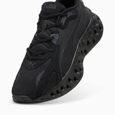
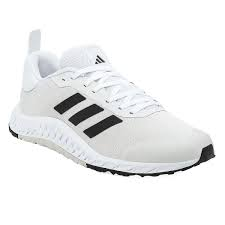
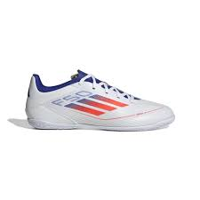
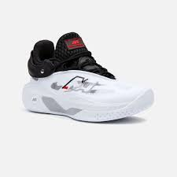
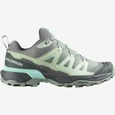
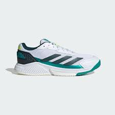

Running (Asfalto/Carretera)

Máxima amortiguación, ligereza y flexibilidad, suela con tracción para asfalto.
Trail Running

Suela robusta y con tacos prominentes (tracción agresiva), mayor protección y durabilidad, a menudo con refuerzos.
Training / Gimnasio

Más estabilidad lateral, suela plana y con buen agarre, menor amortiguación que las de running pero más base de soporte.
Fútbol (Botas)
.jpg)
Tacos en la suela para agarre (césped natural o artificial), materiales ligeros y que permitan el toque del balón.
Fútbol Sala / Futsal

Suela de goma lisa o con patrón específico para tracción en interiores, sin tacos.
Baloncesto

Alto soporte en el tobillo (a menudo de caña alta), gran amortiguación para saltos y suela con agarre multidireccional.
Trekking / Senderismo

Suela robusta y con tracción (a veces tipo bota para protección del tobillo), impermeabilidad, mayor soporte y rigidez.
Tenis / Pádel

Gran durabilidad y resistencia a la abrasión lateral, suela con patrón de espiga para tracción y deslizamiento controlado.